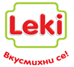
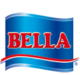
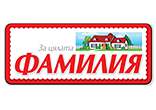
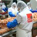
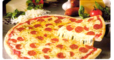
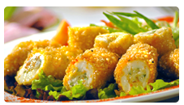

За нас
„Белла България” е най-големият производител на хранителни продукти в страната. Създава, развива и предлага иновативни продукти в различни ценови сегменти, които отговарят на очакванията на потребителите за постоянно качество и разумни цени. Това се дължи на високото качество на продукцията, добре развитата дистрибуторска мрежа и гъвкавата и иновативна бизнес стратегия.
Разгледайте нашите марки:
"Ние сме отдадени на потребителите"
Стартирала дейността си през 1992 г., днес компанията притежава портфолио от над 200 продукта.Тези марки включват „Перелик”, „Сачи”, LEKI, „Белла”, Tommi, „Флора” и дрРазгледайте нашите марки:



Новини
Рецепти

„Белла България“ се включи в проект за...
Всеки бранш да си има точно дефинирани изисквания за всяка ключова позиция, съобразени със спецификата му...

Пица Рататуй
Почистете чушките от семките и ги нарежете на ленти, тиквичката - на кръгчета, а патладжана и доматите - на кубчета. Отцедете доматите от сока...

Пражка шунка с чушки и сирене
Обелете чушките, почистете ги от семките и ги нарежете на ивички. Пригответе марината от оцета, зехтина, ситно нарязаната скилидка чесън, сол и пипер на вкус..